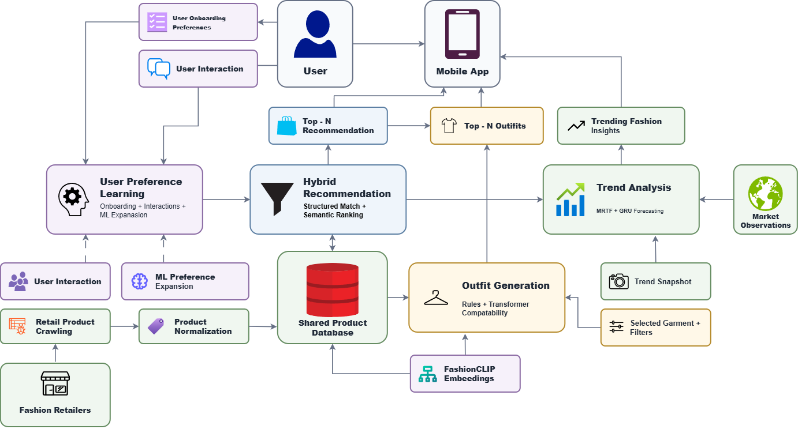

01
User Preference Analysis & Dynamic Modelling
Builds a profile from onboarding, updates it from views, saves, selections and dislikes, and expands it with a multi-label Logistic Regression model.
Ramanayake A.R.M.C.N.K
Smart Fashion Assistant: An Intelligent Personalized and Trend-Aware Fashion Recommendation System
A multi-engine intelligent fashion recommendation system with dynamic preference learning and trend awareness.
Online fashion has no shortage of clothes. The hard part is choosing. OutfitIQ learns what each user likes, follows what the Sri Lankan market is moving towards, and turns a single garment into a complete, compatible outfit, all in one mobile app.
The same kind of garment shows up across many retailers, each described with different categories, styles and colours. A user's taste changes over time, new users have no history at all, and a product that matches someone's taste may not work with the rest of their outfit.
Existing work treats personalisation, trend forecasting and outfit compatibility as separate problems.
OutfitIQ keeps four kinds of intelligence separate, then connects them. It asks what this user is likely to prefer, which products match that taste, which fashion attributes are gaining market interest, and which garments work together as a complete look.
Read the methodologyEach engine is owned by one member of the research team.
Builds a profile from onboarding, updates it from views, saves, selections and dislikes, and expands it with a multi-label Logistic Regression model.
Normalises a multi-retailer catalogue and ranks products with structured matching, a fine-tuned SentenceTransformer, and a product-quality score.
Combines the Market Restock–Turnover Factor (MRTF) with a GRU-based TrendNet to score which fashion attributes are rising in the market.
Completes an outfit from one selected garment using interpretable fashion rules and an Outfit Transformer over cached FashionCLIP embeddings.
User signals, retailer catalogues and market observations flow through the four engines into recommendations, outfits and trend insights in the mobile app.
